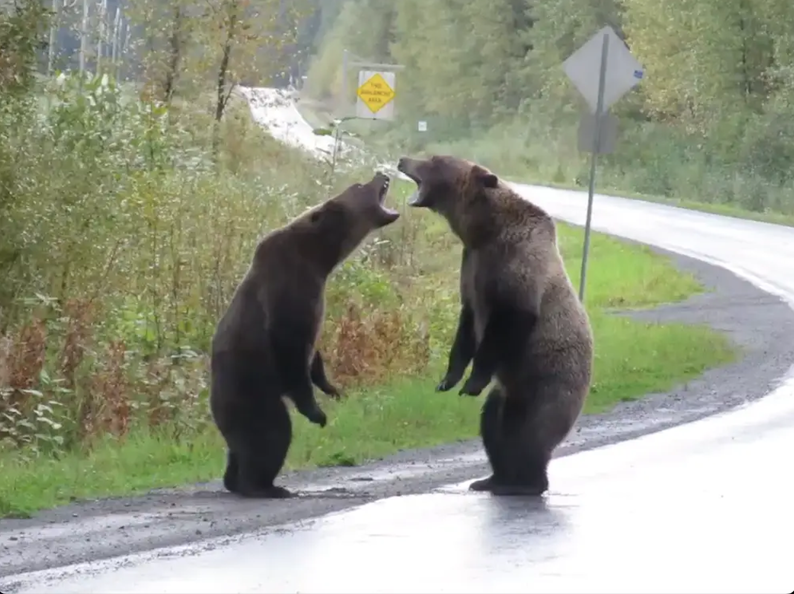
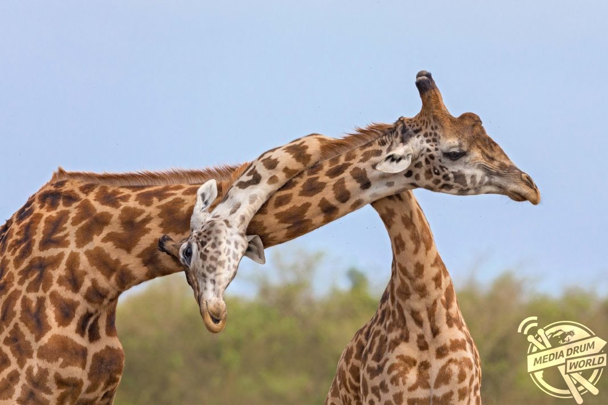
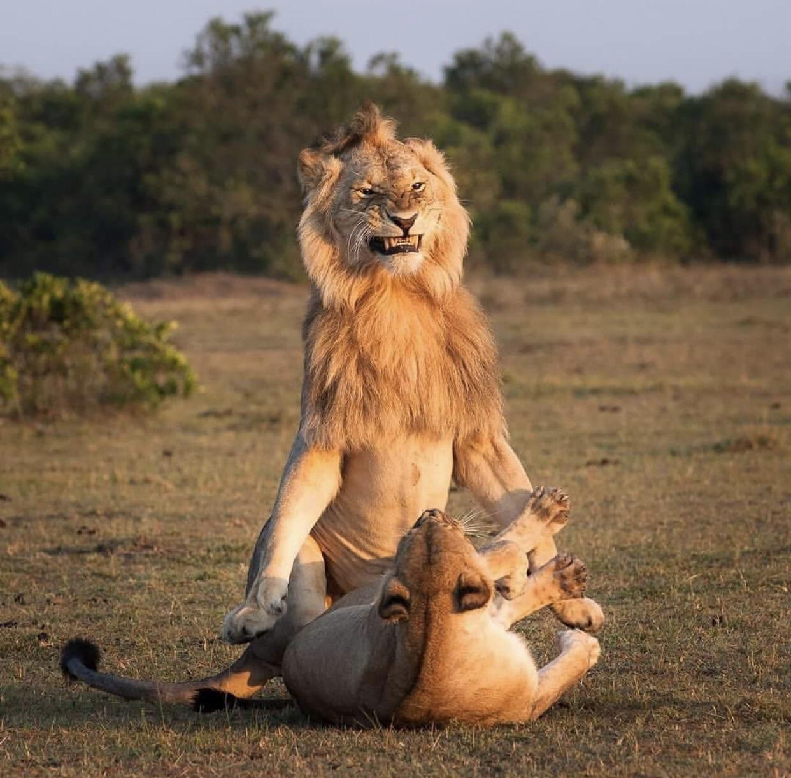
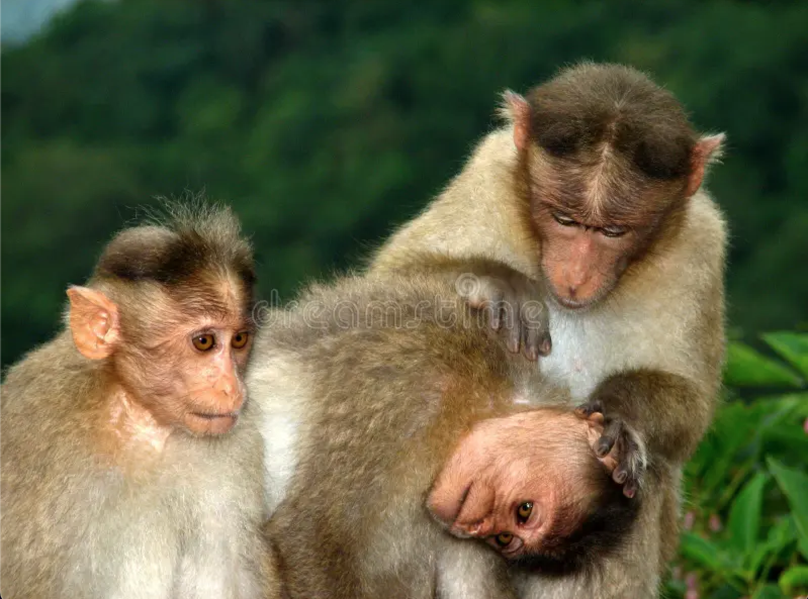
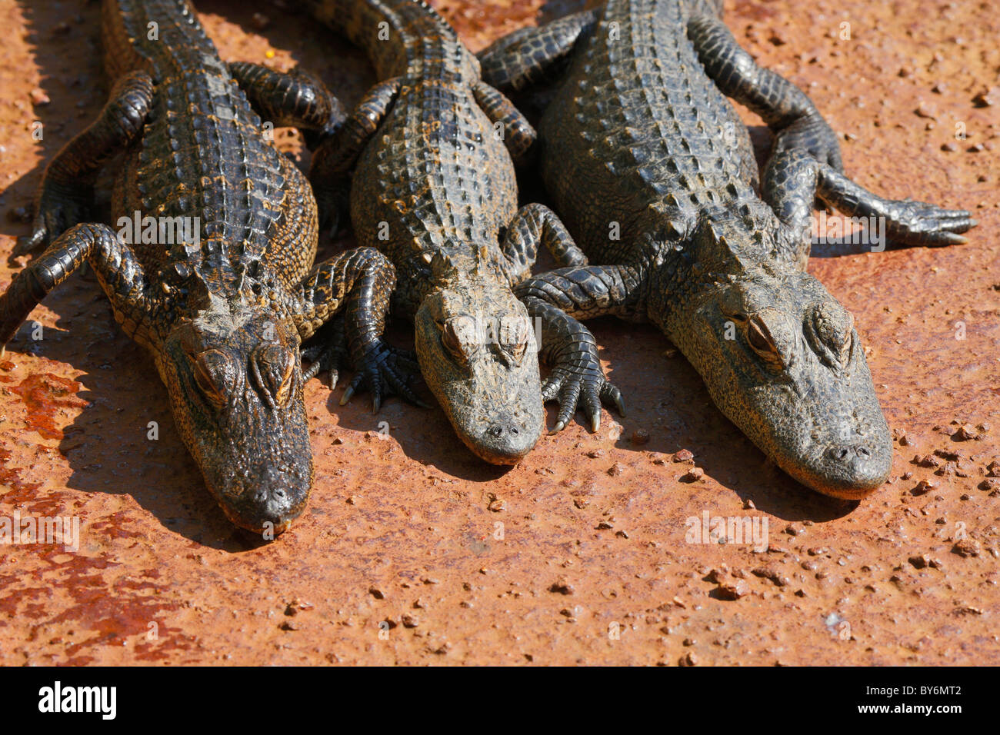

The animals
Bears
- Ollie
- Mona
Bears, the cuddly giants of the forest, spend most of their time lounging around like it's a lazy Sunday afternoon. Ollie, the bear with an insatiable sweet tooth, once got caught in a honey heist, leaving a sticky trail throughout the zoo. Mona, on the other hand, is the resident yoga master, often seen striking poses that would put even the most experienced yogis to shame.
Giraffes
- Frankie
- Coconut
Giraffes, with their long necks and dainty steps, are the fashionistas of the animal kingdom. Frankie struts around like he's on a catwalk, showing off his spots with pride. Coconut, however, is the clumsy one of the group, always tripping over his own feet and causing chaos wherever he goes. 
Lions
- Mella
- Karl
Lions, the kings and queens of the savannah, rule their domain with a regal air. Mella, the lioness with a penchant for napping, once slept through an entire stampede, earning her the title of the sleepiest lioness in all the land. Karl, on the other hand, fancies himself a philosopher, often found pondering the meaning of life while lounging in the shade. 
Monkeys
- Cookie
- Earl
- Banana Pudding
Monkeys, the mischievous pranksters of the jungle, are always up to no good. Cookie, the cheekiest of the bunch, once convinced the entire zoo staff that bananas were the new currency, leading to a hilarious mix-up at the snack bar. Earl, however, is the resident genius, often seen tinkering with contraptions that would make even the most seasoned engineers envious. 
Alligators
- Wren
- Aspen
- Mika
Alligators, the stealthy predators of the swamp, lurk in the shadows with a sly grin. Wren, the master of disguise, once convinced the entire zoo that he was actually a crocodile in disguise, leading to a comical case of mistaken identity. Aspen, on the other hand, is the resident daredevil, often seen performing death-defying stunts that leave the audience gasping in awe. 